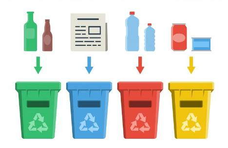
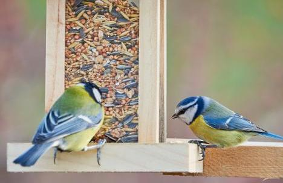
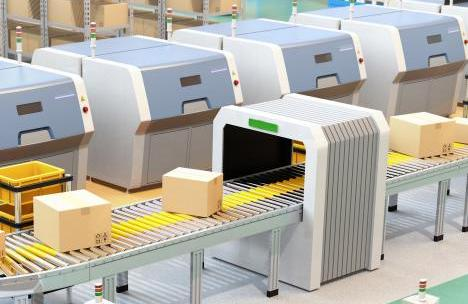

IoT fogalma
A Dolgok Internete (Internet of Things – IoT) összekapcsolja és „okossá teszi” a különböző tárgyakat, „dolgokat”, legyenek azok gépek, autók, épületek vagy bármilyen elektronikai – vagy elektronikával felszerelt – eszközök.
Az interneten keresztül hálózatba kapcsolt, csatlakoztatott (connected) készülékek képesek kommunikálni egymással, az applikációkkal és a felhasználókkal is. Az IoT kifejezést 2009-ben Kevin Ashton brit mérnök alkotta meg. A Dolgok Internete rendkívül szerteágazó témakör a viselhető eszközöktől, szenzoroktól kezdve az okosotthonokon, okosvárosokon keresztül az ipari felhasználásig (IIoT).
Legfrissebb IoT hírek

Okosan is csökkenthető a globális hulladék mennyisége
A fenntarthatósághoz kapcsolódó fejlesztésekre jó példa lehet az AMP Robotics mesterséges intelligencia (AI) alapú rendszere. A fejlesztés a futószalag felett dolgozó háromágú szortírozó robotok révén képes automatikusan szétválogatni a különféle újrahasznosítható anyagokat. A pontos szortírozásban hasznosítják a gépi tanulás és a számítógépes látás technológiáit is.
Egyre többet ér az ujjlenyomatunk
A Keyble biometrikus hitelesítésre fejlesztett eszköz. Többféle viselhető kiegészítőbe is integrálható, legyen szó okosóráról, okoskarpántról vagy akár más divatékszerekről. Az eszköz az úgynevezett biosensing technológiai funkcióit is magában foglalja. Így a felhasználók folyamatosan nyomon követhetik és másokkal is megoszthatják az alapvető életfunkcióikra vonatkozó adatokat. A Flywallet abban bízik, hogy mindez a kezelőorvosok munkáját is segítheti például a szívritmuszavarok azonosításában és monitorozásában.
Digitális asszisztens váltaná ki a papírmunkát az agrárcégeknél
A fejlesztés célja a többi között az adatbevitel digitalizációja, a típusfeladatok sztenderdizálása és a minél nagyobb fokú automatizálás. A terveik szerint a platform a gazdáknak egyszerű, könnyen kezelhető adminisztrációs megoldást nyújt, és leveszi a felelősség terhét, biztosítva a jogi, pénzügyi és hatósági megfelelést. Az agronómusok munkáját azzal segítenék, hogy a szakemberek az adatbevitelt követően gombnyomásra generálhatják a különböző jelentéseket – hibalehetőség nélkül.
Motiváló okostükrök otthoni edzéshez
Az innovatív okostükrök akár igazi edzők által vezetett, különleges, virtuális programokat tesznek lehetővé. Az előfizetéses formában elérhető szolgáltatások többféle edzésformát és erősségi szintet is kínálnak, beleértve a jógát, az erősítő edzéseket, a kardiógyakorlatokat és még sok mást. A tükröket pedig csak egyszerűen csak fel kell akasztani a falra vagy le kell támasztani a megfelelő helyre. Mivel a legtöbb fitnesztükör ma már beépített kamerával rendelkezik, így a felhasználó folyamatosan nyomon követheti saját mozgását és virtuálisan csatlakozhat személyi edzőjéhez.

Nagyot kaszált az okos-madáretető
A modern, formatervezett etető az eledeladagolón kívül magába foglal egy leválasztható modult , amely egy kis videokamerát, mikrofont és mozgásérzékelőt tartalmaz. Ha egy madár száll az etetőre, az eszköz egy mobilalkalmazás és vezeték nélküli kapcsolat útján értesíti a tulajdonost, aki akár fényképet is készíthet a távolból. Az applikáció lehetővé teszi az így készített fotók megosztását, továbbá tanácsot ad ahhoz, hogy faja alapján milyen eledelt kapjon a látogató.
Részletesen az okos-madáretetőről

Raktár-automatizáció: nagyot fordult a világ
Az AGV-k (Assisted guided vehicles) gyakorlatilag robotok, amelyek magában a raktárépületben és környékén szállítják az árut. A kerekeken guruló, szenzorokkal felszerelt gépek előre meghatározott útvonalakon közlekednek a sorba rendezett árutornyok között, azokat megemelve kiszedik a szükséges terméket, amelyet aztán elszállítanak az egyik alkalmazotthoz. Az edge computing és az AI azonban lehetővé tették a villástargoncák automatizálását is, így már nincs szükség arra, hogy azokat emberi sofőrök irányítsák. Az okos szortírozó- és futószalag-rendszerek pedig lehetővé teszik a válogatás és szállítás automatizálását